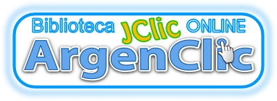
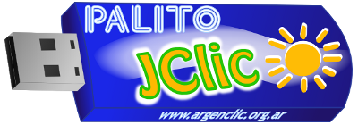

|

- Agradecemos
a Francesc Busquet Burguera y a todo el equipo de Zona Clic por su
excepcional trabajo.
- Agradecemos
también a todos los integrantes de la comunidad de
cliqueros, que desde hace muchos años comparten sus creaciones.
- Las
imágenes de los estudiantes fueron realizadas por Ivan Zigaran
quien hizo los dibujos para el EPUEL 2010. Estos dibujos se ofrecen bajo la licencia
CC BY SA y se podía descargar en el espacio de RECURSOS GRÁFICOS. Gracias también por compartir sus creaciones. El resto de la gráfica es del autor de este proyecto,
y se distribuyen tal cual (intentaremos colocar los editables en línea
próximamente) bajo la licencia general de la obra, enlazada al pie.
- El
último agradecimiento es para Gleducar, USLA y Carlos Sisek, que
generosamente
otorgan el espacio necesario en sus servidores web.
Si
desea enlazar este proyecto, rogamos copiar y pegar el código
incrustado debajo.
Enlace
|
Código para
pegar en su sitio
|

|
<a
href="https://servidor.aulaslibres.ar/projects/index.html"><img
style="border: 0px solid ; width: 300px; height: 105px;"
alt="https://servidor.aulaslibres.ar/projects/recursos/palito JClic"
src="https://servidor.aulaslibres.ar/projects/recursos/palito2.png"
align="middle"></a>
|
|
<a
href="https://servidor.aulaslibres.ar/projects/index.html"><img
style="border: 0px solid ; width: 200px; height: 70px;"
alt="https://servidor.aulaslibres.ar/projects/recursos/palito JClic"
src="https://servidor.aulaslibres.ar/projects/recursos/palito2.png"
align="middle"></a>
|
|
<a
href="https://servidor.aulaslibres.ar/projects/index.html"><img
style="border: 0px solid ; width: 107px; height: 300px;"
alt="https://servidor.aulaslibres.ar/projects/recursos/palito JClic"
src="https://servidor.aulaslibres.ar/projects/recursos/palitoP.png"
align="middle"></a>
|
|
|